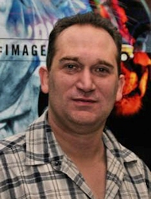

This site was conceived and developed under the guidance of Grant Meredith and Ann Packman.
Grant Meredith 
Grant Meredith is a lecturer in multimedia and games design within the School of Science, Information Technology & Engineering (SITE) at the University of Ballarat, Victoria, Australia. Grant is an active and innovative developer and researcher within virtual worlds and is the programme leader for the Technologies for Empowering People for Participation in Society (TEPPS) Programme (http://tinyurl.com/tepps). Grant enjoys the challenge of lecturing and communicating with a stutter.
Contact Grant: g.meredith@ballarat.edu.auGrant's Bio: http://uob-community.ballarat.edu.au/~gmeredith/index.htm
Associate Professor Ann Packman
Ann Packman is a senior research officer at the Australian Stuttering Research Centre (ASRC),
The University of Sydney, New South Wales, Australia.
Ann is a highly regarded academic and has worked for more than 30 years in the area of stuttering
as a clinician, teacher and researcher.
One of Anne's current interests is the theories behind the cause of stuttering.
Contact Ann: ann.packman@sydney.edu.au
Link to ASRC: http://sydney.edu.au/health_sciences/asrc/